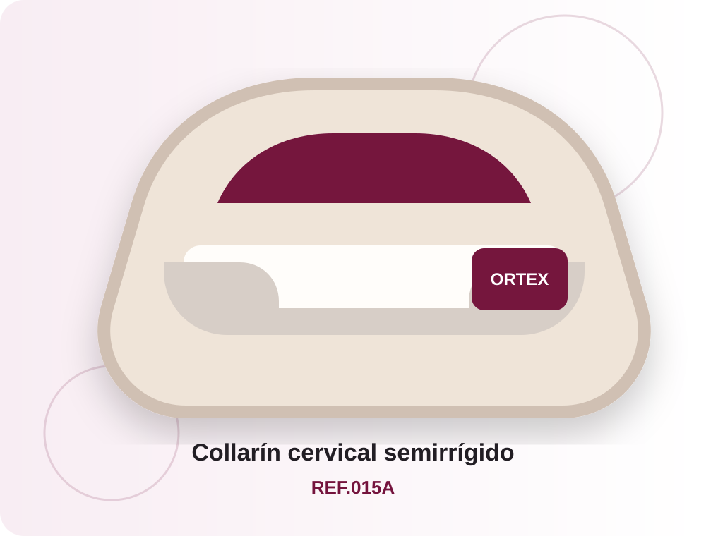

Cuello
Collarín cervical blando con refuerzo y elevación trasera
Diseño anatómico con refuerzo y parte posterior elevada. Fabricado con espuma de poliuretano de alta densidad y estructura 3D.
REF.100Ver detalles
Inicio › Cuello
Ortesis cervicales diseñadas para inmovilización, soporte y rehabilitación de la columna cervical.
Productos de la categoría
Fichas preparadas con descripción, características, tallas e indicaciones.
Diseño anatómico con refuerzo y parte posterior elevada. Fabricado con espuma de poliuretano de alta densidad y estructura 3D.

Collarín con manga de punto dividida en compartimentos y rellena de bolas de poliestireno para una fijación confortable.
Diseño de dos piezas con cierre de velcro y estructura reforzada con soportes plásticos para mayor estabilidad cervical.
Collarín rígido con abertura frontal para traqueotomía, compatible con cánulas plásticas y metálicas.